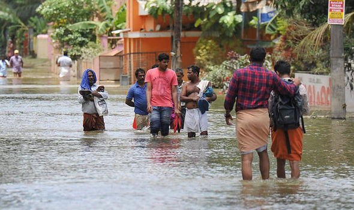
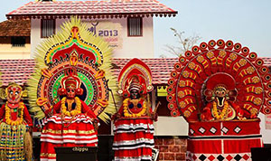
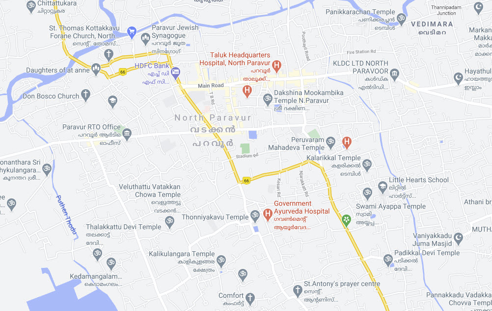

NEWS
Get the latest North Paravur updates & announcements
Welcome to NorthParavur.in, your complete digital guide to one of the most historic towns in South India. Find things to do, Muziris & Cherai attractions, local directories, events, restaurants, and hotels.

Get the latest North Paravur updates & announcements

Explore local events, sports turfs, and happenings in North Paravur

Explore Municipalities, Panchayats, and Villages in Paravur Taluk
AREA: 191.82 sq km
STD CODE: 0484
RTO CODE: KL-42
VILLAGES: 14
BLOCKS: 2 (Paravur, Alangad)
MUNICIPALITIES: 2 (North Paravur, Eloor)
Airport: Cochin International Airport (22 KM)
Railway Station: Aluva (17 KM) / Ernakulam Town (24 KM)
Road / Bus: Frequent KSRTC & Private buses from Kochi, Aluva, Thrissur, Guruvayur
NH-66: Kochi (21 KM) | Kodungallur (12 KM) | Thrissur (48 KM)
POLICE STATION: +91 484 244 5525
FIRE STATION: +91 484 244 3101
TALUK HOSPITAL: +91 484 244 4438
KSRTC STAND: +91 484 244 4439
KSEB PARAVUR: +91 484 244 2322